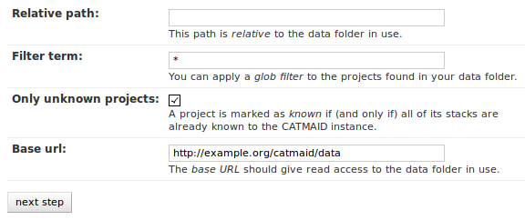
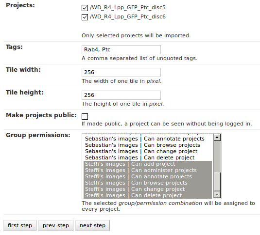

Exporting and importing Data¶
For importing, there are currently two different tool-sets available in CATMAID. A front-end in Django’s admin interface is only available for importing project and stack information. If you want to import tracing data, you have to resort to the command line.
Exporting and importing neuron tracing data¶
Two management commands for Django’s manage.py tool are available in CATMAID
that allow exporting and importing neuron tracing data. They are called
catmaid_export_data and catmaid_import_data. To use them, you have to be
in the virtualenv and it is probably easiest to work from the
django/projects/mysite/ directory.
Exporting data¶
At the moment, the export command is able to create a JSON representation of
neurons, connectors, tags and annotations. To constrain the exported neurons,
annotations can be used. To export data, you have to use the
catmaid_export_data command:
manage.py catmaid_export_data
Adding the --help option will show an overview over all available options.
When called without any option, the command will ask the user for the project to
export from and will start exporting the whole project right away. Use the
additional options to be more precise about what should be exported.
Without any parameter, everything is exported. The type of data to be exported
can be adjusted by the --notreenodes, --noconnectors,
--noannotations and --notags parameters. To constrain the exported
neurons, the --required-annotation option can be used. For instance, to
export all neurons from the project with ID 1 that are annotated with
“Kenyon cells”, one would have to call:
manage.py catmaid_export_data --source 1 --required-annotation "Kenyon cells"
This will create a file called export_pid_1.json.
Importing data¶
The JSON file generated in the previous section can be used to import data into
a CATMAID instance. Currently, the importer won’t change the primary key IDs in
the input data, so be aware of potential data loss if you import into an
instance with existing data. For now, this is only practical to import data
into a new CATMAID instance. To do this, the catmaid_import_data management
command has to be used:
manage.py catmaid_import_data
You can use the --help switch to get an overview of the available options.
Like the exporter, the importer will ask a user if it needs more information.
Required are currently the source file and a user. The importer does currently
not preserve ownership if the imported models. The user (and editor and
reviewer) is needed to override the information in the source data set.
Assuming a file called export_pid_1.json is available and a new CATMAID
project with ID 1 has been created, the following command will start the
import:
manage.py catmaid_import_data --source export_pid_1.json --target 1
The tool will ask for a user to use for all data before it actually starts the import.
Importing project and stack information¶
Image data in CATMAID is referenced by stacks. Stacks in turn are organized in projects. The data used by a stack can have one of various types of data sources. A simple and often used source is a simple folder structure of tiled image data for each stack. To be accessible, a stack’s image base has to give access to such a folder from the web. Of course, stacks and projects can be created by hand, but there is also an importing tool available in Django’s admin interface. It can be found under Custom Views and is named Importer. For now, the importing tool only supports this standard data source.
Therefore, the importing tool expects a certain data folder layout to work on and also relies on so called project files (which are very simple) to identify potential projects. The next section will introduce the project file format and after that the data layout will be explained.
How to use the importing tool will be shown in the last section.
Project Files¶
If the importing tool encounters a folder with a file called
project.yaml in it, it will look at it as a potential project. If
this file is not available, the folder is ignored. However, if the file
is there it gets parsed and if all information is found the tool is
looking for, the project can be imported. So let’s assume we have a
project with two stacks stored in folder with the following layout:
project1/
project.yaml
stack1/
stack2/
A project file contains the basic properties of a project and its associated stacks. It is a simple YAML file and could look like this for the example above:
project:
name: "Wing Disc 1"
stacks:
- folder: "stack1"
name: "Channel 1"
metadata: "PMT Offset: 10, Laser Power: 0.5, PMT Voltage: 550"
dimension: "(3886,3893,55)"
resolution: "(138.0,138.0,1.0)"
zoomlevels: 2
fileextension: "jpg"
overlays:
- name: "Channel 2 overlay"
folder: "stack2"
defaultopacity: 0.5
fileextension: "jpg"
- name: "Remote overlay"
url: "http://my.other.server.net/overlaystack/"
fileextension: "jpg"
- folder: "stack2"
name: "Channel 2"
metadata: "PMT Offset: 10, Laser Power: 0.7, PMT Voltage: 500"
dimension: "(3886,3893,55)"
resolution: "(138.0,138.0,1.0)"
zoomlevels: 2
fileextension: "jpg"
- url: "http://my.other.server.net/examplestack/"
name: "Remote stack"
dimension: "(3886,3893,55)"
resolution: "(138.0,138.0,1.0)"
zoomlevels: 3
fileextension: "png"
As can be seen, a project has only two properties: a name and a set of stacks. A stack, however, needs more information. In general, there are two ways to specify the data source for a folder: 1. a folder, than can be read relative to the project file and 2. a URL which is used as is as a stack’s image base.
The first stack in the example above is based on a folder in the same
directory as the project file. The folder property names this image
data folder for this stack, relative to the project file. The name of
stack is stored in the name field and metadata (which is shown when
a stack is displayed) can be added with the metadata property. A
stack also needs dimensions and resolution information.
Dimensions are the stacks X, Y and Z extent in pixel. The resolution
should be in in nanometers per pixel, in X, Y and Z.
Additionally to the folder information, the second stack above uses the
zoomlevels setting to declare the number of zoom levels. It also
specifies the file extension of the image files with the
fileextension setting. If these settings are not used, the importer
will look at the folder to find out the information on its own. Such a
search is only started if one of those settings is missing and only a
missing setting is set to the values found. These settings can therefore
be used to have more explicit project files, avoid file system look-ups
or to use custom values (e.g. to only use two of four zoom levels).
The last stack in the example above doesn’t use a local stack folder,
but declares the stack’s image base explicitly by using the url
setting. This setting requires to also use the zoomlevel and the
fileextension fields, because the importer won’t try different URLs
to get an idea about the file extension and the number of zoom levels.
Like done for the folder based stacks, a url based stack needs the
resolution and dimension fields, too.
A stack can also have overlays. To add one or more of them, please
use the overlays field in a stack. Like visible in the example, an
overlay needs at least a name and a data source, which can be
either folder or url based. The implications of using one or
the other are similar to the ones for stacks: When using a URL, a
fileextension field needs to be present, but zoom level information
is not needed for overlays. For folder based overlays, you can, but
don’t need to, provide a fileextension. If you don’t, the import
tries to find it on its own. Besides that, a default opacity for
displaying an overlay can be provided, by using the defaultopacity
key word. It ranges from zero to one. If not provided, it defaults to zero.
Also, it wouldn’t confuse the tool if there is more YAML data in the project file than needed. It only uses what is depicted in the sample above. But please keep in mind to not use the tab character in the whitespace indentation (but simple spaces) as this isn’t allowed in YAML.
File and Folder Layout¶
The importing tool expects a certain file any folder layout to work with. It assumes that there is one data folder per CATMAID instance that is accessible from the outside world and is somehow referred to within a stack’s image base (if referring to folders in the project file). As an example, let’s say a link named data has been placed in CATMAID’s httpdocs directory. This link links to your actual data storage and has a layout like the following:
data/
project1/
project2/
project3/
tests/
project4/
Each project folder has contents similar to the example in the previous section. Due to having placed the link in the httpdocs directory it is already accessible under (if your webserver user has reading permissions on it):
http://<CATMAID-URL>/data
A typical URL to a tile of a stack could then look like this (if you
use jpeg as the file extension):
http://<CATMAID-URL>/data/project1/stack1/0/0_0_0.jpeg
The importer uses this data directory or a folder below it as working
directory. In this folder it treats every sub-directory as a potential
project directory and tests if it contains a project file named
project.yaml. If this file is found a folder remains potential
project. A folder is ignored, though, when the project file is not
available.
Using the Importer¶
To use the importer, you have to adjust your CATMAID settings file to
make your data path and its URL known. These settings are called
CATMAID_IMPORT_PATH and CATMAID_IMPORT_URL. Sticking to the
examples from before, these variables might be:
CATMAID_IMPORT_PATH = <CATMAID-PATH>/httpdocs/data
CATMAID_IMPORT_URL = http://<CATMAID-URL>/data
With this in place, the importer can be used through Django’s admin interface. It is listed as Importer under Custom Views. The first step is to give the importer more detail about which folders to look in for potential projects:
With these settings, you can narrow down the set of folders looked at.
The relative path setting can be used to specify a sub-directory below
the import path. When doing so, the working directory will be changed
to CATMAID_IMPORT_PATH plus the relative path. If left empty, just
the CATMAID_IMPORT_PATH setting will be used. Additionally, you
can filter folders in tho working directory by specifying a filter
term. You can use Unix shell-style wildcards there. With the check-box
below this setting, you can make sure the tool looks only at unknown
projects. Here, a project is unknown if all of its stacks are known to
CATMAID. A stack in turn is known if there is already a stack with the
same image base. The last setting on this dialog is the Base URL. By
default it is set to the value of CATMAID_IMPORT_URL (if available).
This setting plus the relative path stay the same for every project
to be imported in this run. To continue, click on the next step
button.
The importer will tell you if it doesn’t find any projects based on the settings of the first step. However, if it does find potential projects, it allows you to unselect projects that shouldn’t get imported and to add more details:
Besides deciding which projects to actually import, you can also add tags which will be attached to the new projects. If the tile size differs from the standard, it can be adjusted here. If you want your projects to be accessible publicly, you can mark the corresponding check-box.
When the Check classification links option is selected, the importer tries to suggest existing classification graphs to be linked to the new project(s). These suggestions are optional and based on the tags you entered before. If existing projects have the same tags or a super set of it, their linked classification graphs will be suggested.
The last adjustment to make are permissions. With the help of a list box you can select one or more group/permission combinations that the new projects will be assigned. If all is how you want it, you can proceed to the next dialog.
The third and last step is a confirmation where all the information is shown the importer found about the projects and stacks to be imported. To change things in this import, simply go back to a step before, using the buttons at the bottom of the page. If all the project and stack properties as well as the tags and permissions are correct, the actual import can start.
In the end the importer will tell you which projects have been imported and, if there were problems, which ones not.